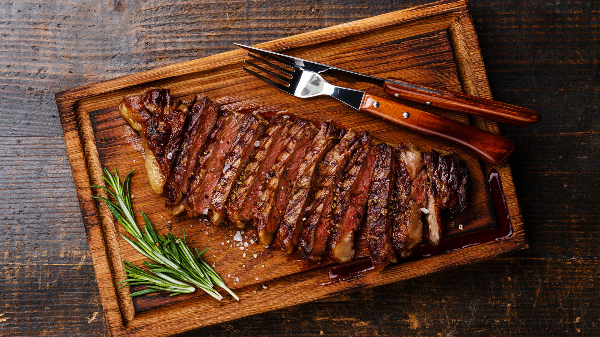

Carnes
Desde el punto de vista nutricional, la carne es una fuente habitual de proteínas, grasas y minerales en la dieta humana. De todos los alimentos que se obtienen de los animales y plantas, la carne es el que mayores valoraciones y apreciaciones alcanza en los mercados y, paradójicamente, también es uno de los alimentos más evitados y que más polémicas suscita. Los animales que se alimentan exclusivamente de carne se llaman carnívoros, mientras que aquellos que se alimentan solamente de plantas, herbívoros. Las plantas que se alimentan de insectos y otros animales se llaman igualmente carnívoras (a pesar de su entomofagia).
 |
 |

Algunos condimentos para carne
La pimienta:
La pimienta se añade al final de la cocción de un alimento para garantizar que mantiene en todo lo posible su sabor. Puede ser blanca, que es la de sabor más suave, negra y verde, que es la más fuerte de las tres. Se usa especialmente para preparar carnes de todo tipo, guisos y salsas.
El pimentón:
Esta especia para carnes se consigue a base de moler determinadas variedades de pimientos rojos, especialmente la ñora y la paprika. De sus ingredientes y proporción depende que sea dulce o picante. El pimentón se emplea para dar color y sabor a todo tipo de productos cárnicos, embutidos y salsas. En España se cultiva en dos puntos geográficos: Murcia y la región de la Vera. Según el tipo de secado, lo podemos encontrar con notas ahumadas o no.
El comino:
Esta semilla tiene un sabor fuerte y dulzón que se potencia cuando se tuesta. Se usa habitualmente molida y es muy eficaz a la hora de realzar el sabor de carnes y hortalizas.
El clavo de olor:
Empleado antiguamente en la medicina odontológica, se trata de una de las especias para carne con sabor más fuerte e intenso. Con reminiscencias orientales, es muy adecuado para el cordero e, incluso, para postres y platos agridulces.
 |
Beneficios |
 |
| Es una fuente de vitamina B12; esta vitamina nos ayuda a metabolizar proteínas, a formar glóbulos rojos y a darle mantenimiento al sistema nervioso central. Es rica en zinc, que ayuda a protegernos contra el daño oxidativo, a la cicatrización de la piel y para crear hemoglobina. Aporta hierro, un elemento importante para mantener un adecuado transporte de oxígeno en nuestra sangre. |  | Las carnes blancas ofrecen grandes beneficios. En general, disminuyen el colesterol LDL (usualmente llamado “colesterol malo”). En particular, el Omega 3, además de colaborar con dicha disminución sin alterar la cantidad de HDL (“colesterol bueno”) se le atribuye la capacidad de reducir el riesgo de trombosis, por disminuir la inflamación y la tendencia a la coagulación. |
Carne de res:
Este tipo de carne es uno de los más consumidos. Sin embargo, al ser carne roja es preferible incluirla en el menú máximo una vez cada dos o tres semanas, y no más, a causa de su concentración de purinas y de grasas malas. O, mejor aún, no consumirla en absoluto y optar por otras fuentes de proteínas. Sin embargo, es también coniocida por ser muy popular por su sabor.
Carne de pollo:
Este es un tipo de carne blanca que también es altamente consumido, normalmente recurriendo al pollo. Además, en la mayoría de los casos la concentración de grasa en esta clase de animales es baja; esto hace que este alimento sea aprovechada por personas que están interesadas en desarrollar sus músculos sin ganar grasa. Una excepción es el caso de la carne de pato, cuyo consumo es preferible moderar.
Carne de pezcado:
El pescado suele ser alto en Omega 3, un tipo de grasa muy saludable que también encontramos en frutos secos como las nueces. Además, en general es baja en grasas, así que es una buena fuente de proteínas.
¡Recuerda!
La carne, ya sea de vacuno, cerdo, cordero o ave constituye una de las principales fuente de proteína de las que dispone el ser humano. Desde un punto de vista nutricional, la importancia de la carne deriva de sus proteínas que son de características y proporciones similares en todos los tipos de carne. Estas proteínas son de alta calidad ya que contienen todos los aminoácidos esenciales. El organismo no es capaz de sintetizar estos aminoácidos por lo que se hace indispensable incluirlos a través de la dieta.